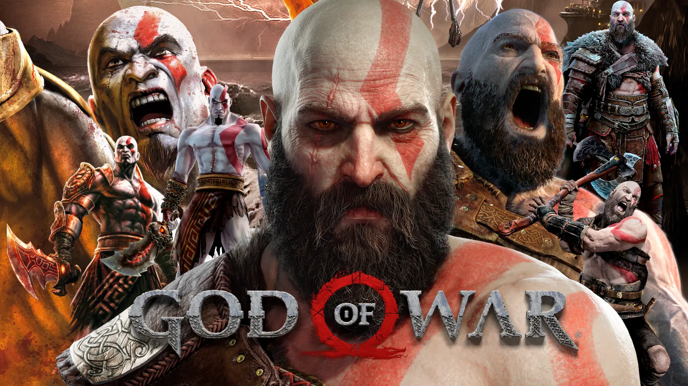

🪓 God of War

Género: Acción-Aventura / Hack and Slash
Desarrolladora: Santa Monica Studio (Sony Interactive Entertainment)
Creador: David Jaffe
Lanzamiento del primer juego: 22 de marzo de 2005 (PlayStation 2)
Ventas totales de la franquicia: Más de 66 millones de unidades
📖 ¿Qué es God of War?
God of War es una de las sagas insignia de PlayStation. Cuenta la historia de Kratos, un guerrero espartano que desafía a los dioses. La saga original estaba ambientada en la mitología griega, mientras que el reinicio de 2018 y su secuela se sitúan en la mitología nórdica. Es conocida por su combate brutal, sus jefes colosales y su narrativa épica sobre venganza, redención y paternidad.
🎮 La era griega (2005-2013)
La primera trilogía sigue a Kratos, un espartano que, tras ser traicionado por Ares (el dios de la guerra), vende su alma a los olímpicos para liberarse. Pero los dioses lo engañan, y Kratos jura venganza contra todo el Olimpo.
- God of War (2005): Kratos debe matar a Ares para ser perdonado. El juego introdujo el combate con las Hojas del Caos y los quick-time events (QTE) que se volvieron famosos. Vendió 4.6 millones de copias.
- God of War II (2007): Kratos es traicionado por Zeus y debe viajar al pasado para cambiar su destino. Considerado uno de los mejores juegos de PS2. Vendió 4.2 millones.
- God of War III (2010): El final de la trilogía. Kratos asciende el monte Olimpo para matar a Zeus y a todos los dioses que se le cruzan. Gráficos espectaculares para la época. Vendió 5.2 millones en PS3.
- God of War: Ascension (2013): Precuela que explica cómo Kratos rompió su juramento con Ares. Fue la entrega menos exitosa.
🌲 El reinicio nórdico (2018-actualidad)
Años después de la masacre en Grecia, Kratos vive en los reinos nórdicos con su hijo Atreus. Tras la muerte de su segunda esposa (Faye), ambos emprenden un viaje para esparcir sus cenizas en la cima más alta de los nueve reinos.
- God of War (2018): Reinicio total. Cámara en plano secuencia (sin cortes), combate más pausado con el hacha Leviatán, y una historia centrada en la relación padre-hijo. Fue el Juego del Año en 2018. Vendió más de 23 millones de copias.
- God of War Ragnarök (2022): Secuela directa. Kratos y Atreus enfrentan el Ragnarök, la profecía del fin del mundo nórdico. Introduce a Thor y Odín como antagonistas. Vendió más de 15 millones de copias y fue nominado a Juego del Año 2022.
👥 Personajes principales
- Kratos: El Fantasma de Esparta. Un guerrero implacable que mató a todos los dioses griegos. En la saga nórdica es un padre que intenta controlar su ira para no repetir los errores del pasado.
- Atreus: Hijo de Kratos y Faye. Al principio es débil y enfermizo, pero descubre que es un dios (Loki) y desarrolla poderes. Es el contrapunto emocional de su padre.
- Zeus: Rey de los dioses griegos y principal antagonista de la trilogía original. Traiciona a Kratos y paga con su vida.
- Ares: El dios de la guerra que engañó a Kratos para que matara a su propia familia. Es el primer jefe final de la saga.
- Atenea: Diosa de la sabiduría. Ayuda a Kratos en varias entregas, aunque finalmente lo traiciona.
- Mimir: El dios de la sabiduría nórdico, decapitado por Odín pero revive como la cabeza parlante que acompaña a Kratos. Es el alivio cómico y el narrador de la historia.
- Brok y Sindri: Los hermanos enanos herreros. Forjaron el hacha Leviatán y el martillo Mjolnir. Brok es grosero pero leal; Sindri es neurótico y obsesivo.
- Freya: Diosa nórdica del amor y la fertilidad. Es la madre de Baldur, a quien Kratos mata. Jura venganza pero eventualmente se reconcilia con Kratos en Ragnarök.
- Thor: El dios del trueno. Busca vengar la muerte de sus hijos Baldur y Modi. Es brutal, alcohólico y más complejo de lo que parece.
- Odin: El dios de la sabiduría, conocimiento y... la paranoia. Es el villano principal de Ragnarök. Manipula a todos para evitar la profecía de su muerte.
⚔️ Armas icónicas
- Hojas del Caos: Las espadas gemelas unidas por cadenas. Fueron el arma principal en la saga griega. Kratos las recupera en God of War 2018 a regañadientes.
- Hacha Leviatán: El arma principal en el reinicio. Un hacha de hielo que regresa a la mano de Kratos al lanzarla. Fue forjada por los hermanos enanos.
- Espada del Olimpo: Un arma masiva que Kratos usa para matar dioses y titanes. Aparece en God of War II y III.
🎮 La jugabilidad
La saga original era un hack and slash puro: Kratos se movía libremente mientras masacraba oleadas de enemigos con combos espectaculares y jefes enormes. Los quick-time events (QTE) eran una marca registrada: en mitad de una pelea contra un jefe, aparecían botones en pantalla para realizar ejecuciones brutales.
El reinicio de 2018 cambió la fórmula por completo. La cámara pasó a ser en tercera persona sobre el hombro (sin cortes, todo el juego es un único plano secuencia), el combate se volvió más estratégico y pausado, con ataques ligeros, pesados, bloqueos, esquivas y habilidades especiales. También introdujo elementos RPG: niveles, equipo, mejoras y habilidades desbloqueables. El resultado ganó el premio al Mejor Juego del Año en 2018.
🏆 Récords y logros
- God of War 2018 vendió más de 23 millones de copias, siendo el juego más vendido de la franquicia.
- Ganó más de 200 premios de Juego del Año en 2018, incluyendo The Game Awards.
- Ragnarök vendió más de 15 millones de copias y fue nominado a 10 premios en The Game Awards 2022.
- La saga completa supera los 66 millones de copias vendidas.
- Christopher Judge, la voz de Kratos en el reinicio, ganó el premio a Mejor Interpretación en The Game Awards 2022.
🎬 Posible serie o película
Se ha rumoreado durante años sobre una serie o película de God of War. En 2024, Amazon Prime Video estaba en negociaciones para adaptar la saga nórdica a una serie de acción real, con el actor de The Witcher como posible candidato para interpretar a Kratos.
Puntuación general: ⭐⭐⭐⭐⭐ (5/5 - Una de las sagas más importantes de PlayStation y del gaming en general)
← Volver a la lista de juegos